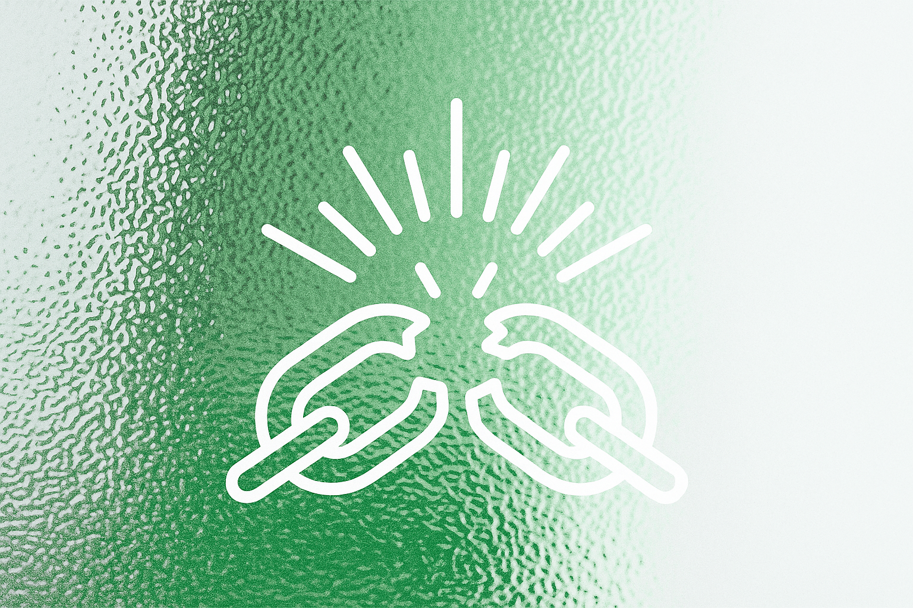
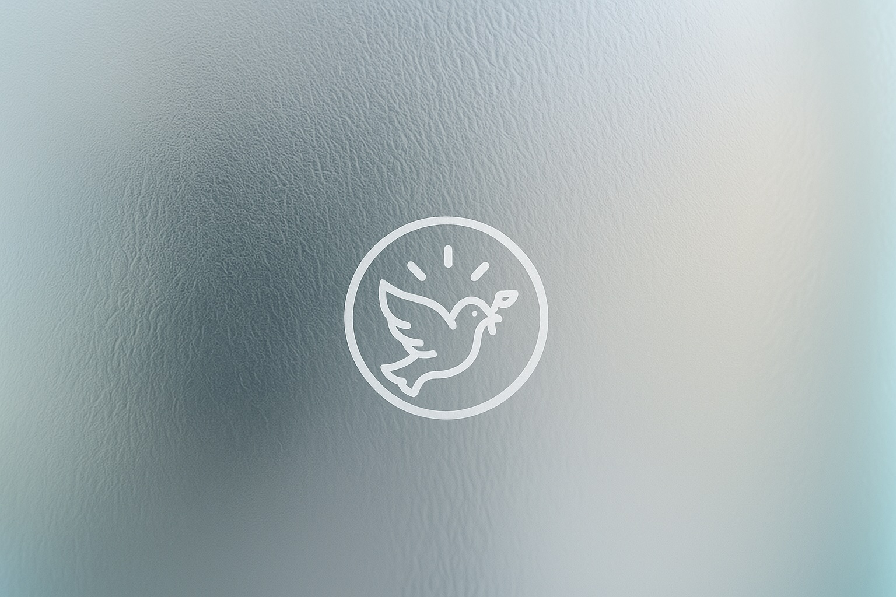

BREAK FREE
LIVE PURE
WALK IN PURPOSE
Helping individuals and families overcome pornography and sexual addiction through faith, science, and community support.
We believe freedom is possible—and it begins with truth, grace, and courage. At Guardians of Purity, we’re here to walk with you through the struggle, not with shame, but with hope. Whether you’re battling silently, trying to heal from past wounds, or supporting someone you love, this space was created for you. Through biblical wisdom, scientific understanding of addiction, and the power of real relationships, we offer a path toward healing and transformation. You’ll find practical tools, encouraging stories, daily guidance, and a growing community committed to purity, renewal, and lifelong freedom. You are not alone. You are not too far gone. And it’s never too late to start again.
Get StartedStart Here
Begin your journey toward freedom with these first steps.
Begin the Journey
42 chapters of guided biblical teaching, parables, and reflection.
2Pray for Freedom
4 weeks of daily prayers for breaking free and renewal.
3Explore Resources
Practical tools, guides, and articles to support your walk.
4Read Chapter 1
Start with the very first step — God's Design for Your Body.
At Guardians of Purity, our mission is to lead individuals and families into lasting freedom from pornography and sexual addiction through the power of truth, faith, and community. We are committed to equipping you with biblically grounded guidance, practical tools, and science-backed strategies to break free, renew your mind, and live a life of integrity and purpose. We don’t just aim to help you stop a habit—we’re here to help you rebuild your heart, restore your identity, and pursue the life God designed for you.
Learn MoreHow We Help
Biblical principles for purity and transformation.
Understanding addiction and the brain.
Online forums and accountability groups.
Success Stories
Eli’s Story – Finding Hope Young
I was 11 when I first saw something online I wasn’t supposed to.
At first, I didn’t think it mattered. But over time, I kept
going back. I felt confused, dirty, and scared. I wanted to
stop, but I didn’t know how. I couldn’t talk to my parents or
friends. I felt alone and stuck.
When I came across Guardians of Purity, it felt different. They
talked about things I was afraid to say out loud. The way they
explained God’s love helped me believe I wasn’t too young to be
free. I started reading the Bible again, praying, and setting up
limits on my phone. I even talked to my older brother, and he
started helping me too.
I’m still learning, but I know now that I’m not alone. Jesus is
with me, and I don’t have to live in shame anymore. I’m learning
to fight, and I believe I can live pure—even at my age.
— Eli J., 13 years old, California
Featured Resources

4 Weeks of Prayer for Breaking Free
Downloadable Guide

The Science of Porn Addiction
Blog Article
Building a Purity Action Plan
Online Course
Most Important Topics
The Power of Accountability
Discover how accountability can be a cornerstone in overcoming addiction.
Learn MoreProtecting Kids from Porn
Essential guidance for parents to safeguard children in a digital age.
Learn MoreSpiritual Discipline for Purity
Explore practices like fasting to strengthen your spiritual resolve.
Learn More